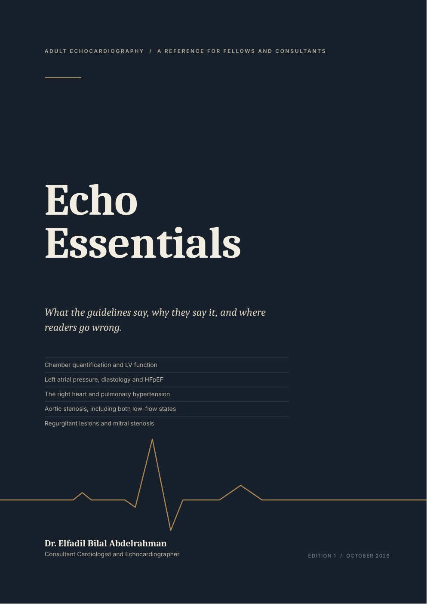
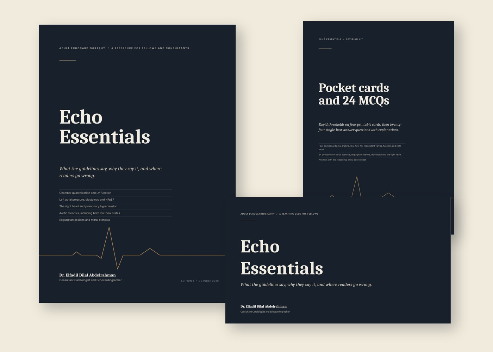
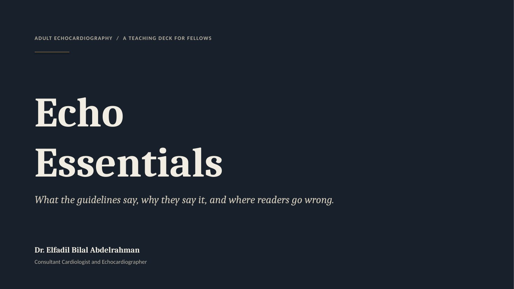
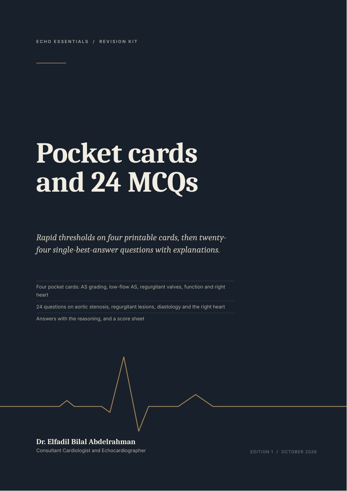
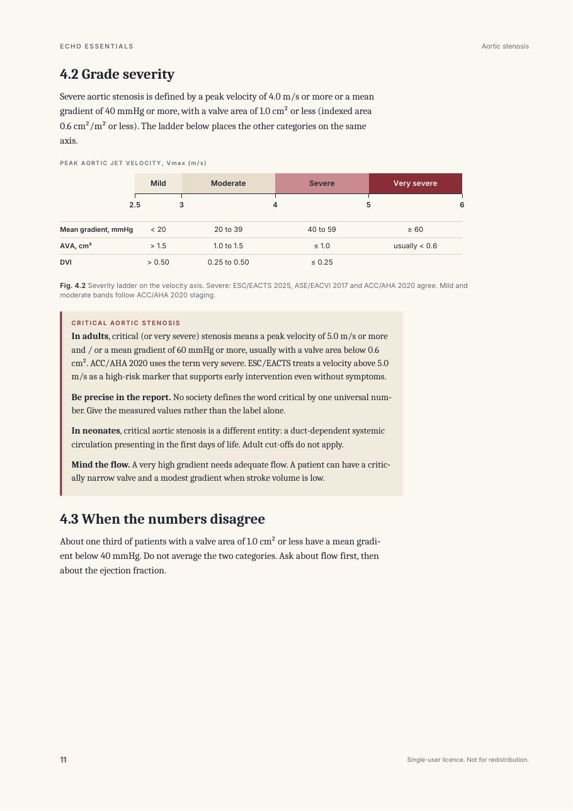
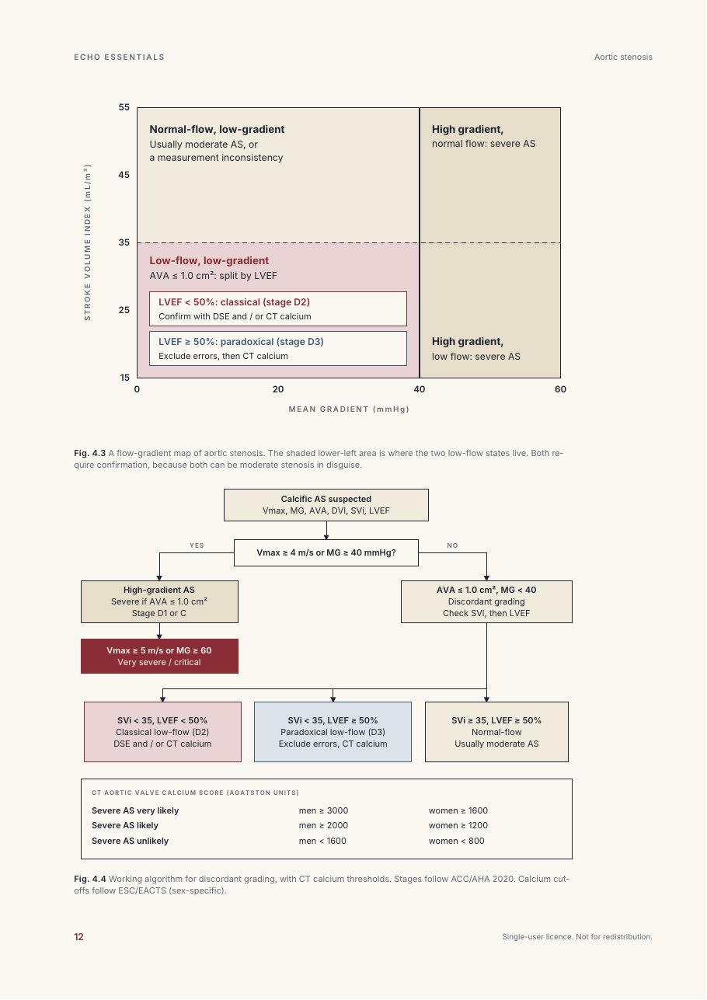

Book / PDF, 24 pages
The reference
Ten chapters from LV quantification to the report. Aortic stenosis gets the longest chapter, with the full grading ladder, critical AS, and both low-flow states.
Adult echocardiography
A reference for fellows and consultants that keeps the guideline numbers and the reasoning behind them on the same page, with the errors that catch experienced readers.
Built on ASE/EACVI recommendations and the 2025 ESC/EACTS valvular heart disease guidelines. Instant PDF download.

What is inside
Read it, teach from it, and test yourself with it. All three share the same numbers and the same wording.

Ten chapters from LV quantification to the report. Aortic stenosis gets the longest chapter, with the full grading ladder, critical AS, and both low-flow states.

Editable slides with speaker notes and two worked cases, for teaching conferences and reading-room sessions. Figures match the book.

Four printable pocket cards and twenty-four single-best-answer questions, each with the reasoning behind the answer.
How it is written
Thresholds are taken from the current ASE/EACVI and ESC/EACTS documents. Where societies differ, both values are printed and labelled.
Each criterion comes with the logic behind it, so you can apply it to the case in front of you rather than recite it.
A margin note on every page marks where readers go wrong: foreshortened views, underestimated LVOT area, jets read from colour alone.
Chapter 4
The chapter does not stop at the severity table. It covers the situations that cause the most disagreement at the reporting station.
An example of the writing
Critical aortic stenosis. In adults, critical (or very severe) stenosis means a peak velocity of 5.0 m/s or more and / or a mean gradient of 60 mmHg or more, usually with a valve area below 0.6 cm².
No society defines the word critical by one universal number. Give the measured values rather than the label alone.
A very high gradient needs adequate flow. A patient can have a critically narrow valve and a modest gradient when stroke volume is low.
Sample pages
Two pages from the aortic stenosis chapter, unretouched.


Contents
Options
Every option is an instant PDF or PowerPoint download. Prices are shown in US dollars.
Single-user licence
Single-user licence
For a programme or echo laboratory
Questions
ASE/EACVI recommendations on chamber quantification (2015), native valve stenosis and regurgitation (2017), the ASE 2025 update on diastolic function and HFpEF, the ASE 2025 reporting standards, the 2025 ESC/EACTS valvular heart disease guidelines, and ACC/AHA 2020 where it differs. Source and edition are named beside each table.
No. It is a companion for daily use and teaching. Classes of recommendation change between editions, so confirm them in the full current text before quoting them in a report or an exam.
Yes. Chapter 4 defines very severe (critical) AS, and covers classical low-flow, low-gradient AS with reduced ejection fraction, paradoxical low-flow AS with preserved ejection fraction, and the normal-flow, low-gradient group, with dobutamine stress echo and CT calcium thresholds.
Yes, for your own use. The pocket cards are laid out to print on A4 pages. The book is set in A4 with a wide margin for notes.
Yes. The slides are editable and include speaker notes. Use them in your own teaching sessions. Please do not redistribute the files themselves.
Write to the address in the footer. A department licence can be invoiced to the institution.